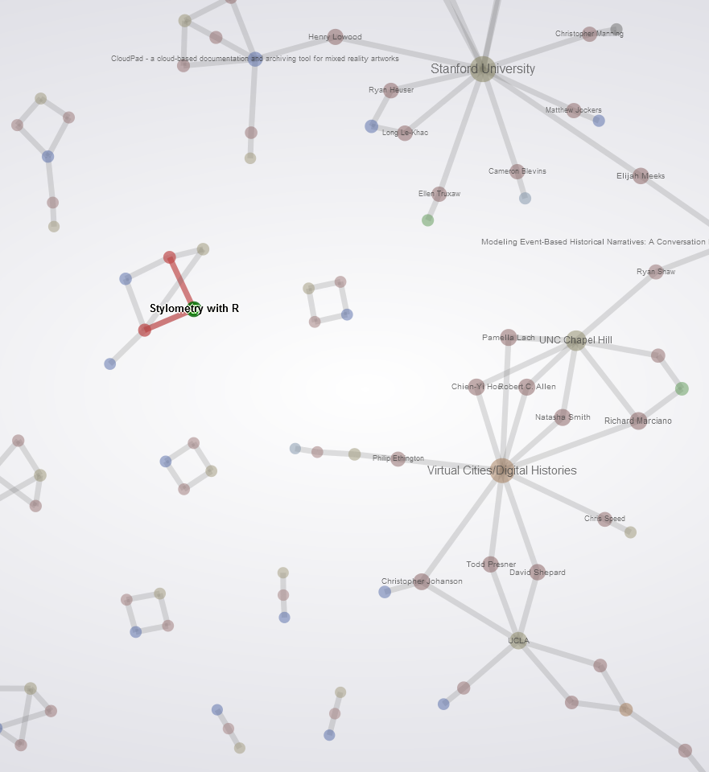
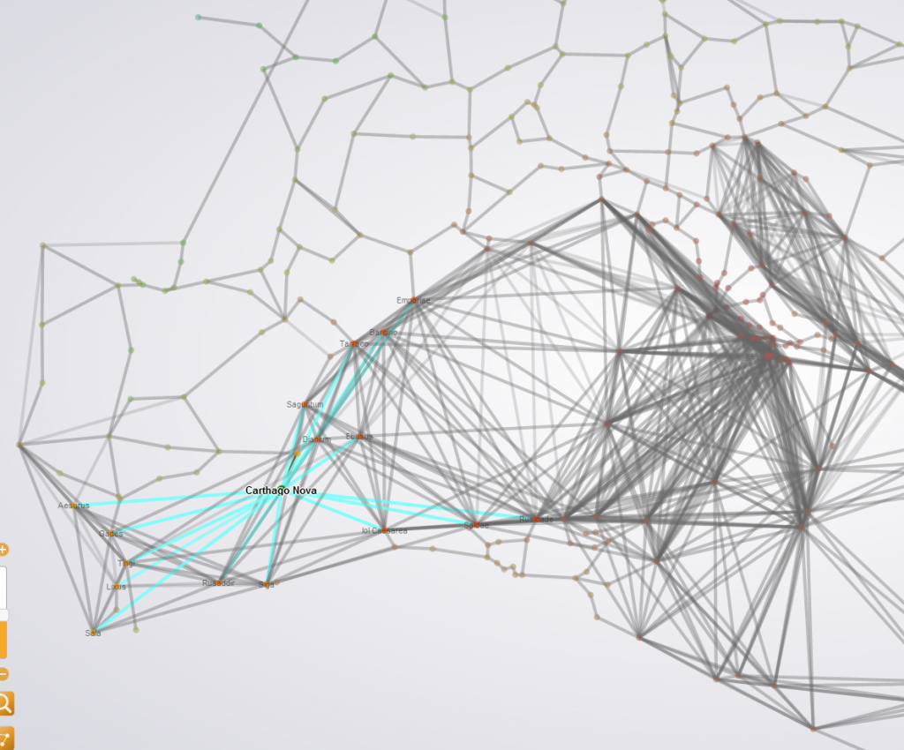

There are a few options for dynamic and traversable network representation on-line, with Processing, Flash and JavaScript providing the majority of the frameworks. I’ve used Protovis and D3 as well as Flash-based solutions like GexfWalker and SiGMA. The strength of gexf-based solutions like GexfWalker is that they maintain the style and formatting that you created in Gephi while providing interactive functionality. The best of these that I’ve seen so far is gexf-js, which takes a gexf and uses HTML5 functionality to present it on-line. There are a few hiccups–it doesn’t work in archaic browsers and things like edge coloring don’t show up properly unless you’re in Chrome–but otherwise it’s a practically zero-effort solution for taking a graph straight out of Gephi and putting it online.


In Chrome, selecting Carthago Nova displays the proper blue "sea lane" edges, whereas in Firefox this will be displayed as a source-target mixed color.
Credit goes to Raphaël Velt–who created gexf-js–for a sleek and simple interface that presents graphs beautifully. You’ll notice that gexf-js uses bezier curves for the edges by default. I’ve changed the code from BezierCurveTo to a simple LineTo, which improves performance a bit but reduces clutter for the types of networks that I tend to work with.